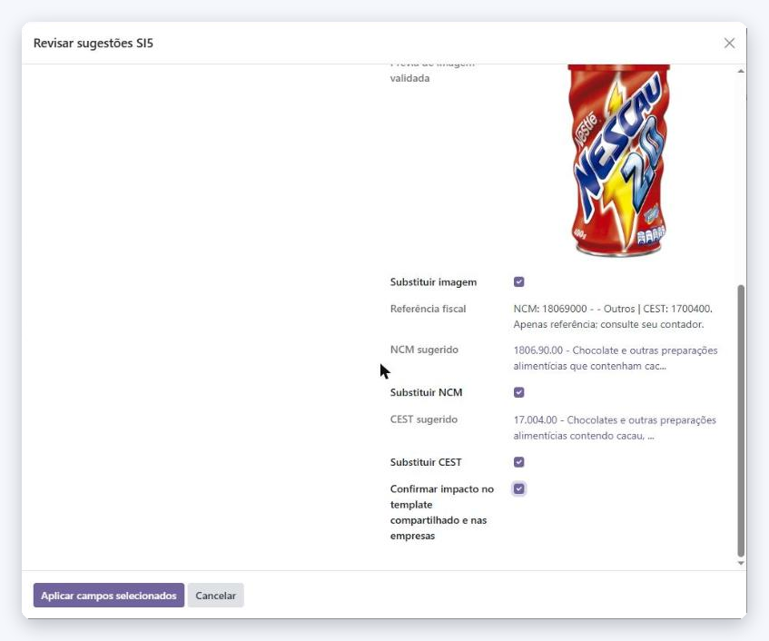

<section class="oe_container">
    <div class="oe_row oe_spaced">
        <div class="oe_span12">
            <h2 class="oe_slogan" style="color:#081128;">SI5 GTIN lookup · Brazilian fiscal data</h2>
            <h3 class="oe_slogan">NCM and CEST suggestions for the OCA <code>l10n_br_fiscal</code></h3>
            <p style="font-size:16px;line-height:1.6;text-align:center;max-width:820px;margin:0 auto;">
                Companion of <b>product_si5_gtin</b>, installed automatically when <code>l10n_br_fiscal</code> is
                present. The SI5 review also shows the NCM and CEST records found in the fiscal tables and lets
                the user apply them to the product template, one checkbox each, never by default.
                Codes are only offered on exact matches, and the CEST only when it belongs to the NCM the
                product will have.
            </p>
            <div class="oe_demo oe_picture oe_screenshot">
                
            </div>
            <p style="font-size:16px;line-height:1.6;text-align:center;max-width:820px;margin:24px auto 0;">
                <b>Em português:</b> sugere o NCM e o CEST das tabelas fiscais da localização brasileira da OCA,
                aplicados no produto só depois da sua revisão. A classificação fiscal continua sendo
                responsabilidade da empresa e do contador.
            </p>
            <p style="text-align:center;font-size:15px;">
                <a href="https://github.com/dhoneshost/odoo-si5-gtin" target="_blank">github.com/dhoneshost/odoo-si5-gtin</a>
                · <a href="mailto:dev@si5.com.br">dev@si5.com.br</a>
            </p>
        </div>
    </div>
</section>
